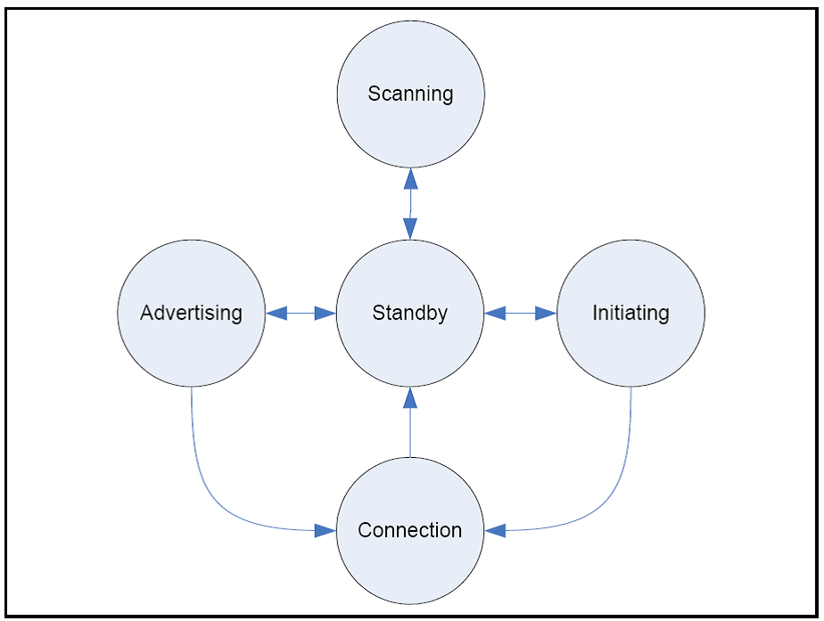
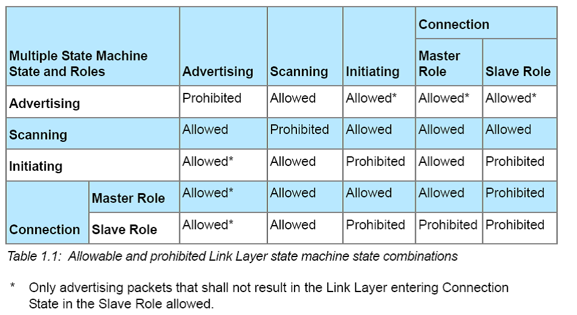
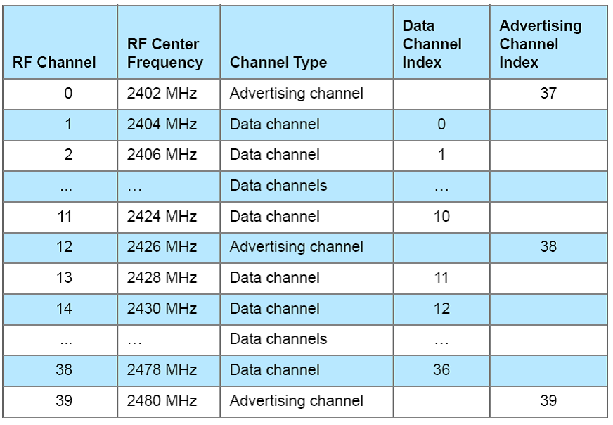
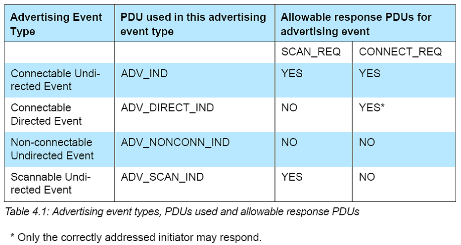
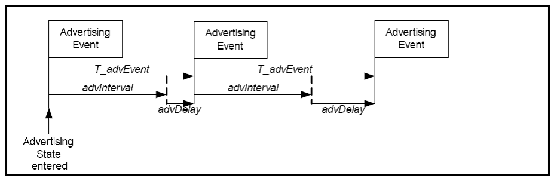
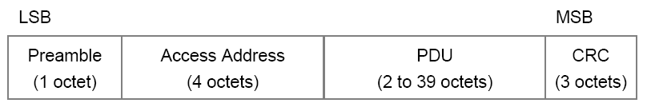
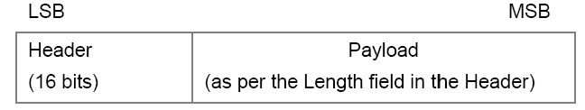
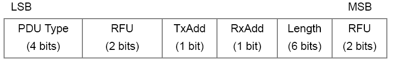
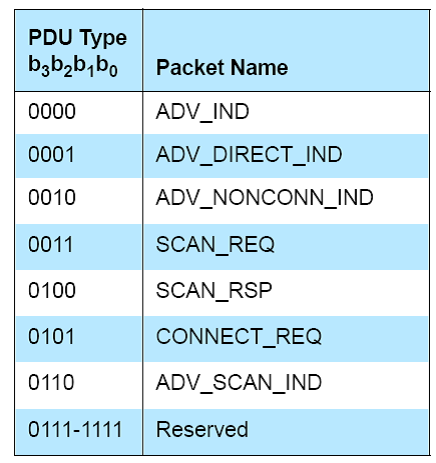

蓝牙链接层管理
1 概述
链接层的操作类似于一个状态机，它有如下5个状态：
- Standby State： 不发送或接收任何数据包，可由其他任一状态进入。
- Advertising State：传输广播信道的数据包，可以监听和响应这些广播信 道的数据包。从Standby状态进入。
- Scanning State：监听来自广播信道的数据包。可以Standby状态进入。
- Initiating State：从广播信道监听特定设备发送过来的数据包并响应以 初始化与另一个设备的连接。可从Standby状态进入。
- Connection State：可从Initiating（Master）或Advertising（Slave） 状态中进入，处于此状态的设备已经与另外一个设备成功连接。
任何时候，只有一种状态是活跃的。链路层状态机至少支持Advertising或 Scanning状态。可以拥有多个状态机实例。
链路层的状态机转换图如下：

链路层状态机与角色之间的组合关系如下所示：

注意：
- 处于连接状态的链路层不能同时处于Master和Slave状态。
- 当设备角色为Salve时，处于连接状态的链路层只能有一个连接。
- 当设备角色为Master时，处于连接状态的链路层可以拥有多个连接。
- 当设备角色为Master时，如果链路层已经工作在连接状态，则不能进入 Initiating状态。
- 当设备角色为Slave时，如果链路层已经工作在Connection或Initiating 状态，则链路层不能工作在Advertising状态，如果处于该广播状态会导 致链路层进入Connection状态的话。
2 物理信道
蓝牙设备RF频道定义在2.4GHz段。这些RF频道分成两种类型的LE物理信道：广 播信道和数据信道。广播信道使用3个RF频道，用于发现设备，初始化一个连 接以及广播数据。数据物理信道可使用多达37个RF频道，用于已经连接的设备 间的通信。这些RF频道都分配了唯一的一个频道号，如图所示：

3 空口协议层（Air Interface Protocol）
T_IFS |
INTER FRAME SPACE。the time from the end of the last bit of the previous packet to the start of the first bit of the subsequent packet. T_IFS =150 μs |
| White List | The set of devices that the Link Layer uses for device filtering is called the White List. On reset, the White List shall be empty. 由Host配置。 |
| PDU | 协议数据单元 |
| NESN | Next Sequence Number |
| SN | Sequence Number |
4 广播状态
处于广播状态的链路层会在每个广播事件中发送广播PDU。 有四种广播事件类型：

当Advertiser收到一个不允许接收的广播事件的PDU，它应该忽略这个PDU。如 果没有接收到任何PDU或接收到的PDU被忽略了，Advertiser要么进入下一个使 用的广播信道，要么关闭广播事件.
广播信道选择：广播事件应该使用事先定义的广播信道。Host会指定哪些广播 信道是可用的。
广播时隙：对于所有非定向的广播事件，两个连续的广播事件的时间间隔 （TadvEvent）通过如下公式计算：
T_advEvent = advInterval + advDelay
其中advInterval是0.625ms的倍数，范围从20ms到10.24 s。如果广播事件类 型是Scannable或non-connectable非定向事件类型，则advInterval不得小于 100ms。 如果广播事件类型是connectable非定向事件类型，则advInterval不 小于20ms。advDelay是一个伪随机数值，范围从0到10ms在每次广播事件中由 链路层产生。

5 Connectable Undirected Event Type
当收到可连接非定向广播事件类型时（ ADV_IND PDU ），Scanner可能会发送
SCAN_REQ PDU请求关于Advertiser更多的信息，而Initiator则可能会发送一
个 CONNECT_REQ PDU请求链路层进入Connection状态。
当Advertiser收到 SCAN_REQ PDU，如果允许响应的话，应该在同一信道上响应
SCAN_RSP PDU。当收到 CONNECT_REQ PDU时，Advertiser应该退出Advertising
状态并进入Slave角色中的Connection状态。
两个连续的 ADV_IND 之间的时间间隔不大于10ms。
6 扫描状态
有两种扫描状态：被动扫描和主动扫描。
在扫描阶段，链路层在广播信道上监听，时长由scanWindow定义。 scanInterval是指扫描的频率，它被定义为两个连续的扫描窗口的起始时间差。 链路层应该每scanInterval发起一次扫描，时长为scanWindow。 scanWindow<=scanInterval。 这两个参数也必须小于或等于10.24s。
当处于被动扫描时，链路层只接收数据包，不发送任何数据包。
当处于主动扫描时，链路层会监听广播数据包，并根据广播包类型，请求 Advertiser发送更多的信息。
当收到 ADV_IND PDU或 ADV_SCAN_IND PDU时，如果允许回应，应该发送 SCAN_REQ PDU。
然后监听从Advertiser返回的 SCAN_RSP PDU，如果收到，则说明成功。
7 初始化连接状态
如上，它也定义了scanInterval和scanWindow两个参数。这两个参数也不大于
10.24 s。当收到 ADV_IND PDU时，如果允许回应，则应该发送 CONNECT_REQ
PDU。之后，将进入Connection状态。
8 连接状态
当进入连接状态，连接就认为是创建了。但是此时，设备之间的连接并没有建 立。只有当两个设备间通过一个数据信道收发数据包的时候，才直接建立起连 接。一旦连接建立，链路层将使用一个监测超时值。处于连接状态的两个设备 一个充当Master角色，一个充当Slave角色。Master控制连接事件的计时，连 接事件也是Master与Slave之间的同步点。
9 连接事件
处于连接状态的链路层只在连接事件中传送数据信道的PDU，Master和Slave交 替发送和接收数据包。连接事件的计时是通过如下两个参数决定的： connInterval和connSlaveLatency。
一个连接事件的起始处称为一个anchor point（锚点）。当处于锚点时，
Master应该向Slave开始传输一个数据信道的PDU。每个连接事件的起始点通过
connInterval有规则的隔开，不会重叠。Master应该确保一个连接事件至少在
下一个连接事件开始前的 T_IFS 时间内关闭。Slave在锚点监听Master发送的数
据包。
connInterval应该为1.25 ms的倍数，范围为7.5ms到4.0s。Slave Latency允 许Slave使用精减数量的连接事件。参数connSlaveLatency定义了slave设备不 需要监听的连续连接事件的数量。connSlaveLatency的值不能导致Master的监 测超时。connSlaveLatency = [0, ((connSupervisionTimeout / connInterval) - 1)], connSlaveLatency同时也必须小于500。当 connSlaveLatency为零时，则Slave必须在每个锚点处监听。如果Slave在应用 了Slave Latency后，没有收到来自Master的包，则它必须在每个锚点处监听 且不能应用salve latency，直到它接收到了来自Master的数据包。
Master和Slave对于每个链路层连接，都有一个16位的连接事件计数器 (connEventCounter)。第一次连接事件时，应该设为0，之后收到每个新的连 接事件时，应该增加1。它的最大值为0xFFFF，超过后，则又从0开始计数。这 个值主要用于同步链路层控制过程。slave应该对所有的连接事件增加计数， 即使由于slave latency的原因，它没有监听Master的这些事件。
10 监控超时
由于各种未预料的原因都可能导致一个连接中断（如设备移出可通信范围，遭 遇了严重的干涉或没有电了），所有Master和Slave都必须监控当前连接的状 态。
Master和Slave使用链路层的连接监控计时器 T_LLconnSupervision 来检测链接
是否丢失。当收到一个非法的数据包的时候，计时器会被重置。
如果链路层的连接监控计时器达到6 * connInterval时，连接还未建立，则认 为连接已经丢失， 保证能快速断开无法建立的连接。
connSupervisionTimeout 这个参数定义了收到两个数据之间的最大时间间隔。 它的取值一般为100ms到32.0s。当然，它也不能小于(1 + connSlaveLatency) * connInterval。
11 连接建立过程
当Initiator发送CONNECT_REQ包时，链路层已经处于连接状态，且角色为 Master。
12 链路层控制
- 连接更新过程
主机可通过LL_CONNECTION_UPDATE_REQ请求更新连接参数（connInterval, connSlaveLatency and connSupervisionTimeout）。 (connIntervalmin(Host specified)<connInterval<connIntervalmax(Host Specified)
Instant:连接更新请求的一个域值，它表示连接事件计数值达到某个值的 时候（connEventCount），应当应用更新后的参数。这个值称为instant。 主机应当保证在Instant值 到达时，从设备至少要听到6个连接事件。
当从设备接收到一个LLCONNECTIONUPDATEREQ协议数据包，且 (Instant - connEventCount) % 65536 <= 32767，并且instant != connEventCount时，从设备应该监听所有的连接事件直到它确认主机已经 收到了它发出的ACK包或者connEventCount = Instant。从设备也应该监听 instant处或之前发生的连接事件。
当从设备接收到一个LLCONNECTIONUPDATEREQ协议数据包，且 (Instant - connEventCount) % 65536 >= 32767时，从设备的链路层应当 认为连接已经丢失，并退出连接状态。
13 数据包格式
蓝牙链接层使用的数据包格式如下所示，数据包传输时LSB先传：

- Preamble 同步码
- 访问地址：对于广播包，固定为：0x8E89BED6。对于数据包，每个连接值 都不同。
- PDU
广播信道中的PDU格式：

广播信道中的PDU格式：

PDU类型有如下一些：
